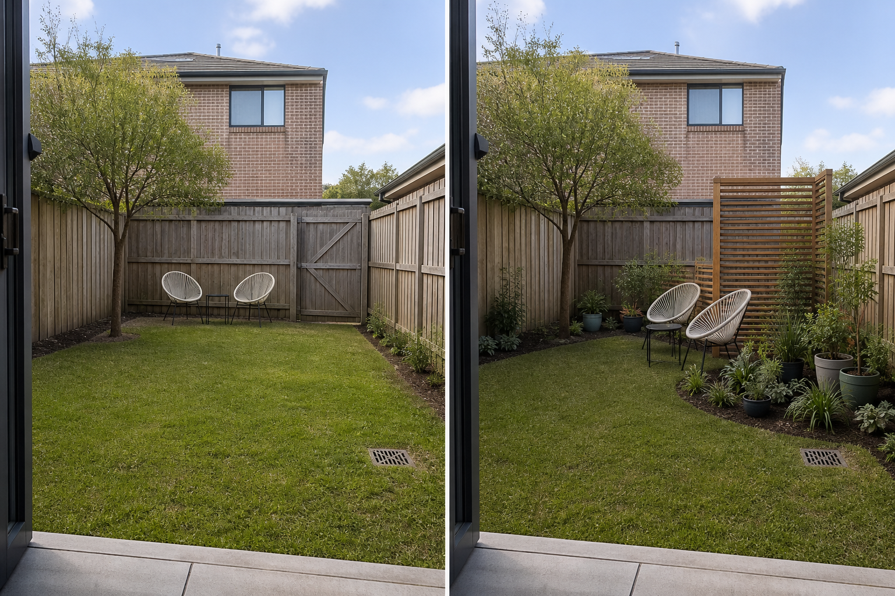

Draw the real sightline
Identify the exact origin and destination of the unwanted view. A neighbor's upper window may cross a seated position differently from a standing path, so the useful target is the activity—not every boundary.
Map the direct view between an exposed window, deck, path, or street and the place you actually use. First move or turn that activity; then add one local layer only where the sightline still crosses it.
Editorially reviewed August 14, 2026.
This AI-generated comparison is visual inspiration, not a privacy guarantee, measured sightline study, structural design, planting specification, wind assessment, legal opinion, or permission to alter a boundary.

Identify the exact origin and destination of the unwanted view. A neighbor's upper window may cross a seated position differently from a standing path, so the useful target is the activity—not every boundary.
The same movable chairs shift away from a face-on alignment and use the garden's width. This reversible test can reveal whether a screen is needed and where it would do useful work.
A modest freestanding screen creates a backdrop beside the seat, while grouped containers and a deeper border soften the transition. The rest of the lawn, route, gate, and outlook stay open.
The concept keeps the neighboring building and upper window, existing fences, rear gate, mature tree, lawn, doorway, drain, and ground level. It does not raise a fence, erase overlooking, promise acoustic screening, claim future plant density, or move the activity beyond the available space.
Record where exposure comes from while sitting and standing, how it changes across the garden, and whether seasonal foliage, lighting, or a raised viewpoint changes the problem.
Measure doors, gates, paths, furniture, maintenance access, and important views from inside. A privacy layer should not create a blind corner or consume the only practical route.
Freestanding or fixed screens can carry wind loads. Verify stability, ownership, leases, utility locations, local rules, and required permissions before installing or attaching anything.
Use reliable local sources to check plant suitability, mature size, growth habit, roots, toxicity, watering, pruning, invasiveness, and seasonal coverage. An image cannot promise density or timing.
Avoid screening an entire perimeter before mapping the view, aligning seating directly with the exposure, blocking gates or drains, relying on future plant growth as an immediate result, or attaching panels to an unchecked fence. Stop and seek appropriate local advice when the idea involves boundary ownership, fence-height rules, structural anchoring, wind loads, excavation near utilities or roots, altered drainage, fire access, or work at height.
Begin with movable seating and a precise sightline map. A freestanding screen, grouped containers, or planting around one activity may reduce exposure without changing the boundary, but stability, local rules, and plant performance still need verification.
Place it between the unwanted viewpoint and the specific seated or activity zone, usually closer to the place being protected than to an unrelated boundary. Test the position temporarily and keep routes, gates, drains, utilities, and useful outlooks clear.
Do not assume they will. Coverage varies with species, climate, maturity, spacing, health, and season. Use plants as one visual layer and verify realistic performance with reliable local sources before depending on them.
Upload a level, wide photo to compare targeted visual directions while keeping the real neighbor, access, drain, and boundaries visible.
AI-generated visualizations are concepts. Verify measurements, sightlines, ownership, access, drainage, utilities, wind, local rules, plant suitability, and professional requirements before buying or building.